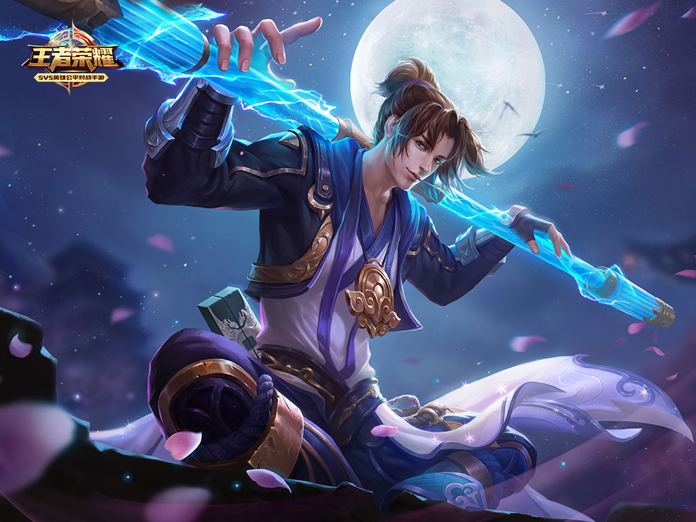

“人类历史上黑暗的一天！”
“它像突如其来的飓风扫过凡间，半座城市因此颤栗。与此相对，奴隶们开始欢呼起解放，自由，以及诸如此类的字眼。”
当权者恐惧着，召唤出同样拥有强大力量的魔种与之对抗。然而，它的长笑贯穿晴空，如意金箍棒所及之处，枷锁破碎。魔种们高喊着他的名字，纷纷倒戈。
是的，他并非孤身战斗，越来越多的奴隶加入它的麾下。它们浩浩荡荡，势不可挡，人们几乎以为大陆会在一夜之间颠覆。魔道的时代，将就此终止吗？
————《竹书纪年，灾难的一天》
这是有史记载以来第一次魔种起义。关于那只猴子的故事，就此戛然而止。它死了吗？被俘虏了吗？最终的命运如何？一切都成为问号，只于史学家，或者孩童的睡前故事里流传。
“什么齐天大圣，没用的猴子罢了。”
“它是传奇。”
“失败者不配被历史铭记。”
“有这样的一个齐天大圣，他率领你们，保护你们。之后，你就无所畏惧。”
时间又翻过了多久呢······几百年？几千年？昔日的当权者埋进坟墓。旅人们自青山脚下走说笑着走过，毫不在意路旁的青石，以及青石前默默矗立的僧侣。

沉睡，沉睡了多久？
是谁在呼唤我？
“和平又安宁的时代，不需要我的存在。”
西方，西方的风暴将袭来。
“危机，超越了人类与魔种的界限。跟我一起，寻找新的道路，去抵达根源吧。”
路在哪里？我曾经竭尽全力的探索过，往前，往前，依旧只能看到虚无和黑暗。
我失败了，我不后悔。
我是齐天大圣，我不会死。
回应着呼唤与呢喃，大地开始剧烈的颤抖。就像千百年前诞生时一样，重破枷锁和束缚。它的身影如此高大，矗立于天地之间。
大圣，归来。
“取经之路，就在脚下。”
返回顶部 返回首页